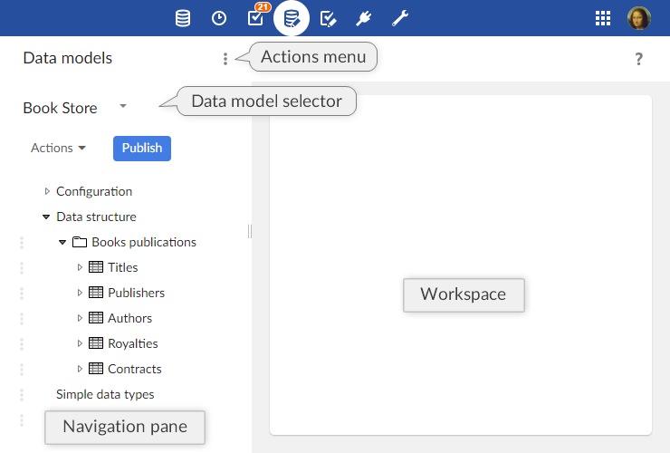

Introduction to data models
Overview
What is a data model?
The first step towards managing data in TIBCO EBX® is to develop a data model. The purpose of a data model is to provide the detailed structural definition of the data that will be managed in the repository, in terms of organization, data types, and semantic relationships.
In order to implement a data model in the repository, you will first create a new data model, then define the details of the structure of its component table, field, and group elements, as well as their behavior and properties. When you have completed the entry or import of your data model structure in the repository, you will publish it to make it available for use by datasets. Once you have a publication of your data model, you and other users can create datasets based upon it to contain the data that is managed by the EBX® repository.
Basic concepts used in data modeling
A basic understanding of the following terms is necessary to proceed with the creation of data models:
Using the Data Models area user interface
Navigating within the Data Model Assistant
Data models can be created, edited or imported, and published in the Data Models area of the user interface. The EBX® data model assistant (DMA) facilitates the development of data models.
Note
This area is available only to authorized users in the 'Advanced perspective'.

The navigation pane is organized into the following sections:
Configuration | The technical configuration of the data model. |
Global properties | Defines the global properties of the data model. |
Included data models | Defines the data models included in the current model. All types defined in included data models can be reused in the current model. |
Component library | Defines the Java components available in the model. These provide programmatic features that will be available for the model, such as programmatic constraints, functions, and UI beans. |
Add-ons | Specifies which add-ons are used by the data model. These add-ons will have the capacity to enrich the current data model after the publication by adding properties and constraints to the elements of the data model. |
Data structure | The structure of the data model. Defines the relationship between the elements of the data model and provides access to the definition of each element. |
Simple data types | Simple reusable types defined in the current data model. |
Complex data types | Complex reusable types defined in the current data model. |
Included simple data types | Simple reusable types defined in an included external data model. |
Included complex data types | Complex reusable types defined in an included external data model. |
Extensions | Extensions available in the current data model. |
Toolbars | The toolbars available to use in the data model. |
User services | Declares the user services using the API available before release 5.8.0. From release 5.8.0, it is advised to use the new UserService API (these services are directly registered through the Java API, hence no declaration is required for them in the data model assistant).. |
Data services | Specifies the WSDL operations' suffixes that allow to refer to a table in the data service operations using a unique name instead of its path. |
Replications | This table defines the replication units of the data model. A replication unit allows the replication of a source table in the relational database, so that external systems can access this data by means of plain SQL requests and views. |
Ajax components | Defines the available Ajax components in the model. |
Java bindings | The bindings specify what Java types have to be generated from the model. |
See also
Data model element icons


Related concepts
 User guide table of contents
User guide table of contents